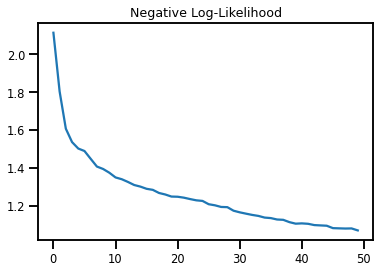
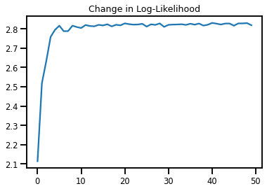
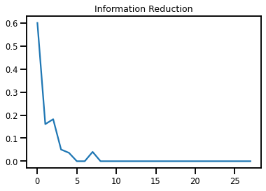
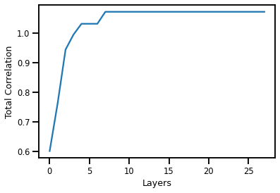
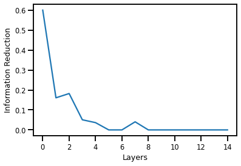

1.4 - Stopping Criteria¶
#@title Install Packages
try:
import sys, os
from pyprojroot import here
# spyder up to find the root
root = here(project_files=[".here"])
# append to path
sys.path.append(str(here()))
# library parameters
from rbig_jax.data import get_classic
from rbig_jax.plots import plot_info_loss, plot_joint, plot_joint_prob
except ModuleNotFoundError:
%%capture
import os
os.system("pip install objax chex")
os.system("pip install git+https://github.com/IPL-UV/rbig_jax.git#egg=rbig_jax")
# jax packages
import jax
import jax.numpy as np
from jax.config import config
import chex
config.update("jax_enable_x64", False)
import numpy as onp
from functools import partial
# logging
import tqdm
import wandb
# plot methods
import matplotlib.pyplot as plt
import seaborn as sns
sns.reset_defaults()
sns.set_context(context="talk", font_scale=0.7)
%matplotlib inline
%load_ext autoreload
%autoreload 2
Data¶
# %%wandb
# get data
n_samples = 2_000
n_features = 2
data = get_classic(n_samples)
# plot data
plt.figure()
sns.jointplot(data[:, 0], data[:, 1])
plt.suptitle('Data Domain')
plt.show()
<Figure size 432x288 with 0 Axes>

Initialization¶
First we need to initialize our RBIG method with some parameters. For example, which marginal gaussianization method, what precision do we want, and what rotation method do we want.
method- the method used to marginally transform the data. We have histogram or kde currently implementedsupport_extension- this is the amount we want to extend the support for our marginal distributions. Higher values indicate higherprecision- we use interpolation because it is much faster. So the CDF, PDF and PPF are interpolation schemes. This value will allow one to have more “precision” for the estimated quantities but it will be slower.
X = np.array(data, dtype=np.float32)
/home/emmanuel/.conda/envs/jax_py38/lib/python3.8/site-packages/jax/lib/xla_bridge.py:130: UserWarning: No GPU/TPU found, falling back to CPU.
warnings.warn('No GPU/TPU found, falling back to CPU.')
Gaussianization¶
from rbig_jax.transforms.block import get_default_rbig_block
# initialize with default block parameters
fit_transform_func, forward_f, grad_f, inverse_f = get_default_rbig_block(
n_samples=n_samples)
# optional, compiles the function to make it faster
fit_transform_func_jitted = jax.jit(fit_transform_func)
forward_f_jitted = jax.jit(forward_f)
grad_f_jitted = jax.jit(grad_f)
inverse_f_jitted = jax.jit(inverse_f)
Fixed Number of Layers¶
from chex import dataclass
@dataclass
class MaxLoss:
layer: int
max_layers: int
def max_condition(state):
loss_state, x, params = state
return loss_state.layer <= loss_state.max_layers
%%time
n_layers = 20
params = []
losses = []
ilayer = 0
X_g = X
state = MaxLoss(layer=0, max_layers=n_layers), X_g, params
max_condition(state)
while max_condition(state):
loss_state, x, params = state
# compute
X_g, layer_params = fit_transform_func_jitted(X_g)
params.append(layer_params)
state = MaxLoss(layer=loss_state.layer + 1, max_layers=loss_state.max_layers), X_g, params
CPU times: user 29.8 ms, sys: 8.06 ms, total: 37.9 ms
Wall time: 11.1 ms
def max_layer_condition(ilayer, true_fun, false_fun, operand):
if pred:
return true_fun(operand)
else:
return false_fun(operand)
def info_change_condition(pred, true_fun, false_fun, operand):
if pred:
return true_fun(operand)
else:
return false_fun(operand)
init_state = MaxLoss(layer=0, max_layers=n_layers), X_g
def max_condition(state):
loss_state, x = state
verdict = lax.cond(True, )
return loss_state.layer <= loss_state.max_layers
def body(state):
loss_state, x = state
x, _ = fit_transform_func_jitted(x)
if loss_state.layer == 1:
i = 1
else:
loss_state.layer == 10
i = 0
params.append(layer_params)
state = MaxLoss(layer=loss_state.layer + 1, max_layers=loss_state.max_layers), x
return state
final_state = jax.lax.while_loop(max_condition, body, init_state)
print(final_state[1][:10].shape)
---------------------------------------------------------------------------
ConcretizationTypeError Traceback (most recent call last)
<ipython-input-69-551858eab1c5> in <module>
21 return state
22
---> 23 final_state = jax.lax.while_loop(max_condition, body, init_state)
24
25 print(final_state[1][:10].shape)
~/.conda/envs/jax_py38/lib/python3.8/site-packages/jax/lax/lax_control_flow.py in while_loop(cond_fun, body_fun, init_val)
269 init_avals = tuple(_map(_abstractify, init_vals))
270 cond_jaxpr, cond_consts, cond_tree = _initial_style_jaxpr(cond_fun, in_tree, init_avals)
--> 271 body_jaxpr, body_consts, body_tree = _initial_style_jaxpr(body_fun, in_tree, init_avals)
272 if not treedef_is_leaf(cond_tree) or len(cond_jaxpr.out_avals) != 1:
273 msg = "cond_fun must return a boolean scalar, but got pytree {}."
~/.conda/envs/jax_py38/lib/python3.8/site-packages/jax/lax/lax_control_flow.py in _initial_style_jaxpr(fun, in_tree, in_avals)
70 @cache()
71 def _initial_style_jaxpr(fun: Callable, in_tree, in_avals):
---> 72 jaxpr, out_avals, consts, out_tree = _initial_style_open_jaxpr(fun, in_tree, in_avals)
73 closed_jaxpr = core.ClosedJaxpr(pe.convert_constvars_jaxpr(jaxpr), ())
74 return closed_jaxpr, consts, out_tree
~/.conda/envs/jax_py38/lib/python3.8/site-packages/jax/lax/lax_control_flow.py in _initial_style_open_jaxpr(fun, in_tree, in_avals)
65 def _initial_style_open_jaxpr(fun: Callable, in_tree, in_avals):
66 wrapped_fun, out_tree = flatten_fun_nokwargs(lu.wrap_init(fun), in_tree)
---> 67 jaxpr, out_avals, consts = pe.trace_to_jaxpr_dynamic(wrapped_fun, in_avals)
68 return jaxpr, out_avals, consts, out_tree()
69
~/.conda/envs/jax_py38/lib/python3.8/site-packages/jax/interpreters/partial_eval.py in trace_to_jaxpr_dynamic(fun, in_avals)
1007 main.source_info = fun_sourceinfo(fun.f) # type: ignore
1008 main.jaxpr_stack = () # type: ignore
-> 1009 jaxpr, out_avals, consts = trace_to_subjaxpr_dynamic(fun, main, in_avals)
1010 del main
1011 return jaxpr, out_avals, consts
~/.conda/envs/jax_py38/lib/python3.8/site-packages/jax/interpreters/partial_eval.py in trace_to_subjaxpr_dynamic(fun, main, in_avals)
1017 trace = DynamicJaxprTrace(main, core.cur_sublevel())
1018 in_tracers = map(trace.new_arg, in_avals)
-> 1019 ans = fun.call_wrapped(*in_tracers)
1020 out_tracers = map(trace.full_raise, ans)
1021 jaxpr, out_avals, consts = frame.to_jaxpr(in_tracers, out_tracers)
~/.conda/envs/jax_py38/lib/python3.8/site-packages/jax/linear_util.py in call_wrapped(self, *args, **kwargs)
149
150 try:
--> 151 ans = self.f(*args, **dict(self.params, **kwargs))
152 except:
153 # Some transformations yield from inside context managers, so we have to
<ipython-input-69-551858eab1c5> in body(state)
10 x, _ = fit_transform_func_jitted(x)
11
---> 12 if loss_state.layer == 1:
13 i = 1
14 else:
~/.conda/envs/jax_py38/lib/python3.8/site-packages/jax/core.py in __bool__(self)
505 def __getitem__(self, idx): return self.aval._getitem(self, idx)
506 def __nonzero__(self): return self.aval._nonzero(self)
--> 507 def __bool__(self): return self.aval._bool(self)
508 def __int__(self): return self.aval._int(self)
509 def __long__(self): return self.aval._long(self)
~/.conda/envs/jax_py38/lib/python3.8/site-packages/jax/core.py in error(self, arg)
863 f"or `jnp.array(x, {fun.__name__})` instead.")
864 def error(self, arg):
--> 865 raise_concretization_error(arg, fname_context)
866 return error
867
~/.conda/envs/jax_py38/lib/python3.8/site-packages/jax/core.py in raise_concretization_error(val, context)
852 "See https://jax.readthedocs.io/en/latest/faq.html#abstract-tracer-value-encountered-where-concrete-value-is-expected-error for more information.\n\n"
853 f"Encountered tracer value: {val}")
--> 854 raise ConcretizationTypeError(msg)
855
856
ConcretizationTypeError: Abstract tracer value encountered where concrete value is expected.
The problem arose with the `bool` function.
While tracing the function body at <ipython-input-69-551858eab1c5>:7, this concrete value was not available in Python because it depends on the value of the arguments to body at <ipython-input-69-551858eab1c5>:7 at flattened positions [0], and the computation of these values is being staged out (that is, delayed rather than executed eagerly).
You can use transformation parameters such as `static_argnums` for `jit` to avoid tracing particular arguments of transformed functions, though at the cost of more recompiles.
See https://jax.readthedocs.io/en/latest/faq.html#abstract-tracer-value-encountered-where-concrete-value-is-expected-error for more information.
Encountered tracer value: Traced<ShapedArray(bool[])>with<DynamicJaxprTrace(level=1/0)>
init_state = MaxLoss(layer=0, max_layers=n_layers), X_g, params
def body(state):
loss_state, x, params = state
x, layer_params = fit_transform_func_jitted(x)
params.append(layer_params)
state = MaxLoss(layer=loss_state.layer + 1, max_layers=loss_state.max_layers), x, params
return state
final_state = jax.lax.while_loop(max_condition, body, init_state)
---------------------------------------------------------------------------
TypeError Traceback (most recent call last)
<ipython-input-59-7c4d70e89b92> in <module>
11 return state
12
---> 13 final_state = jax.lax.while_loop(max_condition, body, init_state)
~/.conda/envs/jax_py38/lib/python3.8/site-packages/jax/lax/lax_control_flow.py in while_loop(cond_fun, body_fun, init_val)
279 in_tree_children = in_tree.children()
280 assert len(in_tree_children) == 1
--> 281 _check_tree_and_avals("body_fun output and input",
282 body_tree, body_jaxpr.out_avals,
283 in_tree_children[0], init_avals)
~/.conda/envs/jax_py38/lib/python3.8/site-packages/jax/lax/lax_control_flow.py in _check_tree_and_avals(what, tree1, avals1, tree2, avals2)
1871 if tree1 != tree2:
1872 msg = ("{} must have same type structure, got {} and {}.")
-> 1873 raise TypeError(msg.format(what, tree1, tree2))
1874 if not all(safe_map(typematch, avals1, avals2)):
1875 msg = ("{} must have identical types, "
TypeError: body_fun output and input must have same type structure, got PyTreeDef(tuple, [PyTreeDef(<class '__main__.MaxLoss'>[PyTreeDef(dict[['layer', 'max_layers']], [*,*])], [*,*]),*,PyTreeDef(list, [PyTreeDef(<class 'rbig_jax.transforms.block.RBIGBlockParams'>[PyTreeDef(dict[['empirical_pdf', 'quantiles', 'rotation', 'support', 'support_pdf']], [*,*,*,*,*])], [*,*,*,*,*]),PyTreeDef(<class 'rbig_jax.transforms.block.RBIGBlockParams'>[PyTreeDef(dict[['empirical_pdf', 'quantiles', 'rotation', 'support', 'support_pdf']], [*,*,*,*,*])], [*,*,*,*,*]),PyTreeDef(<class 'rbig_jax.transforms.block.RBIGBlockParams'>[PyTreeDef(dict[['empirical_pdf', 'quantiles', 'rotation', 'support', 'support_pdf']], [*,*,*,*,*])], [*,*,*,*,*]),PyTreeDef(<class 'rbig_jax.transforms.block.RBIGBlockParams'>[PyTreeDef(dict[['empirical_pdf', 'quantiles', 'rotation', 'support', 'support_pdf']], [*,*,*,*,*])], [*,*,*,*,*]),PyTreeDef(<class 'rbig_jax.transforms.block.RBIGBlockParams'>[PyTreeDef(dict[['empirical_pdf', 'quantiles', 'rotation', 'support', 'support_pdf']], [*,*,*,*,*])], [*,*,*,*,*]),PyTreeDef(<class 'rbig_jax.transforms.block.RBIGBlockParams'>[PyTreeDef(dict[['empirical_pdf', 'quantiles', 'rotation', 'support', 'support_pdf']], [*,*,*,*,*])], [*,*,*,*,*]),PyTreeDef(<class 'rbig_jax.transforms.block.RBIGBlockParams'>[PyTreeDef(dict[['empirical_pdf', 'quantiles', 'rotation', 'support', 'support_pdf']], [*,*,*,*,*])], [*,*,*,*,*]),PyTreeDef(<class 'rbig_jax.transforms.block.RBIGBlockParams'>[PyTreeDef(dict[['empirical_pdf', 'quantiles', 'rotation', 'support', 'support_pdf']], [*,*,*,*,*])], [*,*,*,*,*]),PyTreeDef(<class 'rbig_jax.transforms.block.RBIGBlockParams'>[PyTreeDef(dict[['empirical_pdf', 'quantiles', 'rotation', 'support', 'support_pdf']], [*,*,*,*,*])], [*,*,*,*,*]),PyTreeDef(<class 'rbig_jax.transforms.block.RBIGBlockParams'>[PyTreeDef(dict[['empirical_pdf', 'quantiles', 'rotation', 'support', 'support_pdf']], [*,*,*,*,*])], [*,*,*,*,*]),PyTreeDef(<class 'rbig_jax.transforms.block.RBIGBlockParams'>[PyTreeDef(dict[['empirical_pdf', 'quantiles', 'rotation', 'support', 'support_pdf']], [*,*,*,*,*])], [*,*,*,*,*]),PyTreeDef(<class 'rbig_jax.transforms.block.RBIGBlockParams'>[PyTreeDef(dict[['empirical_pdf', 'quantiles', 'rotation', 'support', 'support_pdf']], [*,*,*,*,*])], [*,*,*,*,*]),PyTreeDef(<class 'rbig_jax.transforms.block.RBIGBlockParams'>[PyTreeDef(dict[['empirical_pdf', 'quantiles', 'rotation', 'support', 'support_pdf']], [*,*,*,*,*])], [*,*,*,*,*]),PyTreeDef(<class 'rbig_jax.transforms.block.RBIGBlockParams'>[PyTreeDef(dict[['empirical_pdf', 'quantiles', 'rotation', 'support', 'support_pdf']], [*,*,*,*,*])], [*,*,*,*,*]),PyTreeDef(<class 'rbig_jax.transforms.block.RBIGBlockParams'>[PyTreeDef(dict[['empirical_pdf', 'quantiles', 'rotation', 'support', 'support_pdf']], [*,*,*,*,*])], [*,*,*,*,*]),PyTreeDef(<class 'rbig_jax.transforms.block.RBIGBlockParams'>[PyTreeDef(dict[['empirical_pdf', 'quantiles', 'rotation', 'support', 'support_pdf']], [*,*,*,*,*])], [*,*,*,*,*]),PyTreeDef(<class 'rbig_jax.transforms.block.RBIGBlockParams'>[PyTreeDef(dict[['empirical_pdf', 'quantiles', 'rotation', 'support', 'support_pdf']], [*,*,*,*,*])], [*,*,*,*,*]),PyTreeDef(<class 'rbig_jax.transforms.block.RBIGBlockParams'>[PyTreeDef(dict[['empirical_pdf', 'quantiles', 'rotation', 'support', 'support_pdf']], [*,*,*,*,*])], [*,*,*,*,*]),PyTreeDef(<class 'rbig_jax.transforms.block.RBIGBlockParams'>[PyTreeDef(dict[['empirical_pdf', 'quantiles', 'rotation', 'support', 'support_pdf']], [*,*,*,*,*])], [*,*,*,*,*]),PyTreeDef(<class 'rbig_jax.transforms.block.RBIGBlockParams'>[PyTreeDef(dict[['empirical_pdf', 'quantiles', 'rotation', 'support', 'support_pdf']], [*,*,*,*,*])], [*,*,*,*,*]),PyTreeDef(<class 'rbig_jax.transforms.block.RBIGBlockParams'>[PyTreeDef(dict[['empirical_pdf', 'quantiles', 'rotation', 'support', 'support_pdf']], [*,*,*,*,*])], [*,*,*,*,*]),PyTreeDef(<class 'rbig_jax.transforms.block.RBIGBlockParams'>[PyTreeDef(dict[['empirical_pdf', 'quantiles', 'rotation', 'support', 'support_pdf']], [*,*,*,*,*])], [*,*,*,*,*])])]) and PyTreeDef(tuple, [PyTreeDef(<class '__main__.MaxLoss'>[PyTreeDef(dict[['layer', 'max_layers']], [*,*])], [*,*]),*,PyTreeDef(list, [PyTreeDef(<class 'rbig_jax.transforms.block.RBIGBlockParams'>[PyTreeDef(dict[['empirical_pdf', 'quantiles', 'rotation', 'support', 'support_pdf']], [*,*,*,*,*])], [*,*,*,*,*]),PyTreeDef(<class 'rbig_jax.transforms.block.RBIGBlockParams'>[PyTreeDef(dict[['empirical_pdf', 'quantiles', 'rotation', 'support', 'support_pdf']], [*,*,*,*,*])], [*,*,*,*,*]),PyTreeDef(<class 'rbig_jax.transforms.block.RBIGBlockParams'>[PyTreeDef(dict[['empirical_pdf', 'quantiles', 'rotation', 'support', 'support_pdf']], [*,*,*,*,*])], [*,*,*,*,*]),PyTreeDef(<class 'rbig_jax.transforms.block.RBIGBlockParams'>[PyTreeDef(dict[['empirical_pdf', 'quantiles', 'rotation', 'support', 'support_pdf']], [*,*,*,*,*])], [*,*,*,*,*]),PyTreeDef(<class 'rbig_jax.transforms.block.RBIGBlockParams'>[PyTreeDef(dict[['empirical_pdf', 'quantiles', 'rotation', 'support', 'support_pdf']], [*,*,*,*,*])], [*,*,*,*,*]),PyTreeDef(<class 'rbig_jax.transforms.block.RBIGBlockParams'>[PyTreeDef(dict[['empirical_pdf', 'quantiles', 'rotation', 'support', 'support_pdf']], [*,*,*,*,*])], [*,*,*,*,*]),PyTreeDef(<class 'rbig_jax.transforms.block.RBIGBlockParams'>[PyTreeDef(dict[['empirical_pdf', 'quantiles', 'rotation', 'support', 'support_pdf']], [*,*,*,*,*])], [*,*,*,*,*]),PyTreeDef(<class 'rbig_jax.transforms.block.RBIGBlockParams'>[PyTreeDef(dict[['empirical_pdf', 'quantiles', 'rotation', 'support', 'support_pdf']], [*,*,*,*,*])], [*,*,*,*,*]),PyTreeDef(<class 'rbig_jax.transforms.block.RBIGBlockParams'>[PyTreeDef(dict[['empirical_pdf', 'quantiles', 'rotation', 'support', 'support_pdf']], [*,*,*,*,*])], [*,*,*,*,*]),PyTreeDef(<class 'rbig_jax.transforms.block.RBIGBlockParams'>[PyTreeDef(dict[['empirical_pdf', 'quantiles', 'rotation', 'support', 'support_pdf']], [*,*,*,*,*])], [*,*,*,*,*]),PyTreeDef(<class 'rbig_jax.transforms.block.RBIGBlockParams'>[PyTreeDef(dict[['empirical_pdf', 'quantiles', 'rotation', 'support', 'support_pdf']], [*,*,*,*,*])], [*,*,*,*,*]),PyTreeDef(<class 'rbig_jax.transforms.block.RBIGBlockParams'>[PyTreeDef(dict[['empirical_pdf', 'quantiles', 'rotation', 'support', 'support_pdf']], [*,*,*,*,*])], [*,*,*,*,*]),PyTreeDef(<class 'rbig_jax.transforms.block.RBIGBlockParams'>[PyTreeDef(dict[['empirical_pdf', 'quantiles', 'rotation', 'support', 'support_pdf']], [*,*,*,*,*])], [*,*,*,*,*]),PyTreeDef(<class 'rbig_jax.transforms.block.RBIGBlockParams'>[PyTreeDef(dict[['empirical_pdf', 'quantiles', 'rotation', 'support', 'support_pdf']], [*,*,*,*,*])], [*,*,*,*,*]),PyTreeDef(<class 'rbig_jax.transforms.block.RBIGBlockParams'>[PyTreeDef(dict[['empirical_pdf', 'quantiles', 'rotation', 'support', 'support_pdf']], [*,*,*,*,*])], [*,*,*,*,*]),PyTreeDef(<class 'rbig_jax.transforms.block.RBIGBlockParams'>[PyTreeDef(dict[['empirical_pdf', 'quantiles', 'rotation', 'support', 'support_pdf']], [*,*,*,*,*])], [*,*,*,*,*]),PyTreeDef(<class 'rbig_jax.transforms.block.RBIGBlockParams'>[PyTreeDef(dict[['empirical_pdf', 'quantiles', 'rotation', 'support', 'support_pdf']], [*,*,*,*,*])], [*,*,*,*,*]),PyTreeDef(<class 'rbig_jax.transforms.block.RBIGBlockParams'>[PyTreeDef(dict[['empirical_pdf', 'quantiles', 'rotation', 'support', 'support_pdf']], [*,*,*,*,*])], [*,*,*,*,*]),PyTreeDef(<class 'rbig_jax.transforms.block.RBIGBlockParams'>[PyTreeDef(dict[['empirical_pdf', 'quantiles', 'rotation', 'support', 'support_pdf']], [*,*,*,*,*])], [*,*,*,*,*]),PyTreeDef(<class 'rbig_jax.transforms.block.RBIGBlockParams'>[PyTreeDef(dict[['empirical_pdf', 'quantiles', 'rotation', 'support', 'support_pdf']], [*,*,*,*,*])], [*,*,*,*,*]),PyTreeDef(<class 'rbig_jax.transforms.block.RBIGBlockParams'>[PyTreeDef(dict[['empirical_pdf', 'quantiles', 'rotation', 'support', 'support_pdf']], [*,*,*,*,*])], [*,*,*,*,*])])]).
plot_joint(X_g, kind="kde")
<Figure size 432x288 with 0 Axes>
Negative Log-Likelihood¶
Loss Function¶
@jax.jit
def nll_loss(X_gauss, X_ldj):
latent_prob = jax.scipy.stats.norm.logpdf(X_g)
log_prob = (latent_prob + X_ldj).sum(-1)
return - log_prob.mean()
Training¶
%%time
X_g_ = X
X_ldj = np.zeros_like(X)
nll_losses = []
for iparam in params:
X_g_, iX_ldj = grad_f_jitted(iparam, X_g_)
X_ldj += iX_ldj
nll_losses.append(nll_loss(X_g_, X_ldj))
chex.assert_tree_all_close(X_g_, X_g)
/home/emmanuel/.conda/envs/jax_py38/lib/python3.8/site-packages/jax/lax/lax.py:6190: UserWarning: Explicitly requested dtype float64 requested in array is not available, and will be truncated to dtype float32. To enable more dtypes, set the jax_enable_x64 configuration option or the JAX_ENABLE_X64 shell environment variable. See https://github.com/google/jax#current-gotchas for more.
warnings.warn(msg.format(dtype, fun_name , truncated_dtype))
CPU times: user 1 s, sys: 57.6 ms, total: 1.06 s
Wall time: 900 ms
Plot Losses¶
plt.figure()
plt.plot(nll_losses)
plt.title('Negative Log-Likelihood')
plt.show()

Negative Log-Likelihood (Change per layer)¶
%%time
X_g_ = X
X_ldj = np.zeros_like(X)
nll_change_losses = []
for iparam in params:
X_g_, iX_ldj = grad_f_jitted(iparam, X_g_)
X_ldj += iX_ldj
nll_change_losses.append(nll_loss(X_g_, iX_ldj))
chex.assert_tree_all_close(X_g_, X_g)
CPU times: user 165 ms, sys: 35.1 ms, total: 200 ms
Wall time: 43.8 ms
plt.figure()
plt.plot(nll_change_losses)
plt.title('Change in Log-Likelihood')
plt.show()

Information Loss¶
Loss Function¶
from rbig_jax.information.total_corr import init_information_reduction_loss
# information reduction loss
info_loss_f = init_information_reduction_loss(n_samples=n_samples, base=2, p=0.1)
loss_f_jitted = jax.jit(info_loss_f) # much faster!
import chex
@chex.dataclass
class InfoLossState:
max_layers: int
ilayer: int
info_loss: chex.Array
def get_minimum_zeroth_element(x: chex.Array, window_size: int = 10) -> int:
# window for the convolution
window = np.ones(window_size) / window_size
# rolling average
x_cumsum_window = np.convolve(np.abs(x), window, "valid")
# get minimum zeroth element
min_idx = int(np.min(np.argwhere(x_cumsum_window == 0.0)[0]))
return min_idx
# window for the convolution
zero_tolerance = 20
window = np.ones(zero_tolerance) / zero_tolerance
# initialize state
max_layers = 10_000
ilayer = 0
init_state = InfoLossState(
max_layers=max_layers,
ilayer=ilayer,
info_loss=np.ones(max_layers)#np.array([10.]*20 + [0.0] * 5)#np.ones(max_layers)
)
condition(init_state)
DeviceArray(True, dtype=bool)
Training¶
%%time
n_layers = 50
params = []
info_losses = []
ilayer = 0
X_g = X
# initialize state
max_layers = 50
ilayer = 0
state = InfoLossState(
max_layers=max_layers,
ilayer=ilayer,
info_loss=np.ones(max_layers)
)
while condition(state):
layer_loss = jax.partial(loss_f_jitted, X_before=X_g)
# compute
X_g, layer_params = fit_transform_func_jitted(X_g)
# get information reduction
layer_loss = layer_loss(X_after=X_g)
# update layer loss
info_losses = jax.ops.index_update(
state.info_loss, state.ilayer, layer_loss
)
state = InfoLossState(
max_layers=max_layers,
ilayer=state.ilayer + 1,
info_loss=info_losses
)
info_losses = np.stack(state.info_loss[:state.ilayer])
CPU times: user 546 ms, sys: 59.2 ms, total: 605 ms
Wall time: 395 ms
plt.figure()
plt.plot(info_losses)
plt.title('Information Reduction')
plt.show()

Total Correlation¶
total_corr = np.cumsum(info_losses)
plt.figure()
plt.plot(total_corr)
plt.ylabel('Total Correlation')
plt.xlabel("Layers")
plt.show()

print(f"Total Correlation: {info_losses.sum():.4f}")
Total Correlation: 1.0715
Optimal Gaussianization¶
info_sum = np.sum(np.abs(layers))
%%time
n_layers = 15
params = []
info_losses = []
ilayer = 0
X_g = X
while ilayer < n_layers:
layer_loss = jax.partial(loss_f_jitted, X_before=X_g)
# compute
X_g, layer_params = fit_transform_func_jitted(X_g)
info_losses.append(layer_loss(X_after=X_g))
# increment
ilayer += 1
info_losses = np.stack(info_losses)
CPU times: user 98.1 ms, sys: 27.2 ms, total: 125 ms
Wall time: 35.8 ms
plt.figure()
plt.plot(info_losses)
plt.ylabel('Information Reduction')
plt.xlabel("Layers")
plt.show()
